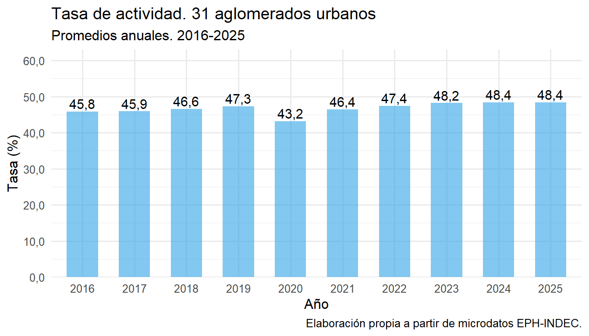
El mercado de trabajo en Argentina y Mendoza durante 2025
Indicadores elaborados a partir de la Encuesta Permanente de Hogares (EPH)
Introducción
Este informe tiene como objetivo presentar datos sistematizados que contribuyan al análisis de la situación del mercado de trabajo en Argentina y Mendoza durante 2025.
La fuente de información utilizada es la Encuesta Permanente de Hogares (EPH), elaborada por el Instituto Nacional de Estadística y Censos (INDEC). Los indicadores fueron construidos a partir del procesamiento de las bases de microdatos de la encuesta, realizado íntegramente en R para facilitar su actualización periódica. Los resultados se presentan como promedios anuales elaborados a partir de los trimestres disponibles,1 criterio que permite reducir la incidencia de las fluctuaciones estacionales y ofrecer una lectura más estable de las tendencias.2
La EPH releva las características sociodemográficas y laborales de la población residente en 31 aglomerados urbanos del país, entre los que se encuentra Gran Mendoza. En consecuencia, los resultados corresponden a este dominio de estimación y no representan la totalidad del territorio nacional ni el conjunto de la provincia de Mendoza.
El análisis comprende las tasas básicas del mercado de trabajo (actividad, empleo y desocupación), junto con indicadores complementarios de presión laboral, como la subocupación demandante y la ocupación demandante.3 Estos indicadores se examinan para el período 2016-2025, con el propósito de situar los resultados más recientes en una perspectiva temporal más amplia.4
Para caracterizar de manera aproximada las condiciones de inserción laboral, se utilizan la tasa de asalarización, definida como el porcentaje de personas asalariadas sobre el total de la población ocupada, y la tasa de no registro, que expresa la proporción de asalariados sin descuento jubilatorio sobre el total de personas asalariadas. Estos datos también se presentan para el período 2016-2025. Asimismo, el documento incorpora los nuevos indicadores de informalidad laboral incluidos en las bases de microdatos de la EPH a partir del cuarto trimestre de 2024. Dado que la información disponible todavía abarca un período reducido, el análisis se concentra en la comparación entre el cuarto trimestre de 2024 y el cuarto trimestre de 2025.5
Finalmente, los indicadores se desagregan por sexo y grupos de edad, con el propósito de analizar las desigualdades de género y la situación de la población joven. Para estas desagregaciones, se comparan los promedios anuales de 2024 y 2025, excepto en el caso de la informalidad laboral, que se analiza a partir de los datos correspondientes a los cuartos trimestres de ambos años.
Resultados destacados
Principales indicadores del mercado laboral
Tasas de actividad, empleo y desocupación (2016-2025)
Durante 2025, la economía argentina registró una recuperación del nivel de actividad, después de dos años consecutivos de caídas del PIB (INDEC, 2026a), aunque el crecimiento perdió dinamismo durante la segunda mitad del año. La expansión fue, además, marcadamente heterogénea: mientras la intermediación financiera, la minería y el sector agropecuario presentaron un crecimiento significativo, la industria manufacturera permaneció prácticamente estancada y la administración pública y los servicios sociales y de salud registraron retrocesos. Este comportamiento se inscribe en el marco del actual modelo económico que se caracteriza por la valorización financiera, la apertura comercial y el ajuste estructural, orientación que tiende a favorecer actividades con escasa capacidad de generación de empleo y a debilitar sectores intensivos en mano de obra, con consecuencias sobre el mercado de trabajo y las condiciones de vida de la población (Manzanelli y Amoretti, 2025, 2026).
Esta recuperación agregada de la actividad no se tradujo en una mejora de los indicadores del mercado de trabajo: la desocupación aumentó y se deterioraron las condiciones de inserción laboral. No obstante, el proceso no se manifestó mediante una expulsión masiva de trabajadores hacia el desempleo abierto, sino principalmente a través de la pérdida de puestos de trabajo asalariados registrados y de la expansión de las inserciones informales, en un contexto de elevada participación económica (González, 2025; Robles et al., 2026).
En relación con las tasas básicas del mercado laboral, los datos de la EPH muestran que, tras la contracción de la participación económica registrada durante la pandemia, la tasa de actividad promedio de los 31 aglomerados urbanos siguió una trayectoria ascendente y alcanzó en 2024 el nivel más elevado del período analizado (Pol et al., 2025). Durante 2025 se mantuvo en ese mismo porcentaje, lo que indica la persistencia de una elevada participación económica de la población. Este comportamiento podría vincularse, entre otros factores, con la necesidad de los hogares de sostener o ampliar sus fuentes de ingresos frente a la persistencia del deterioro de las remuneraciones laborales y la reducción del ingreso disponible. (González y Bonofiglio, 2025;
La tasa de empleo también mostró una recuperación sostenida luego de la pandemia, que se extendió hasta 2023. Sin embargo, disminuyó durante los dos años siguientes. En correspondencia con esta evolución, la tasa de desocupación alcanzó su valor más bajo en 2023 y aumentó en 2024 y 2025. En conjunto, el desempeño de estos indicadores sugiere un debilitamiento de la capacidad del mercado de trabajo para generar puestos y absorber la oferta laboral existente.
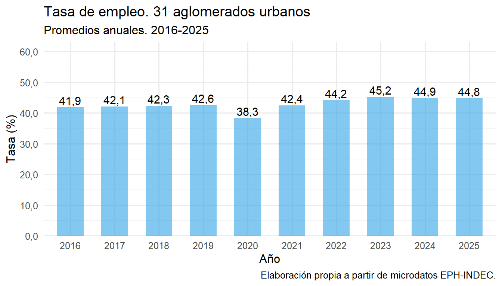
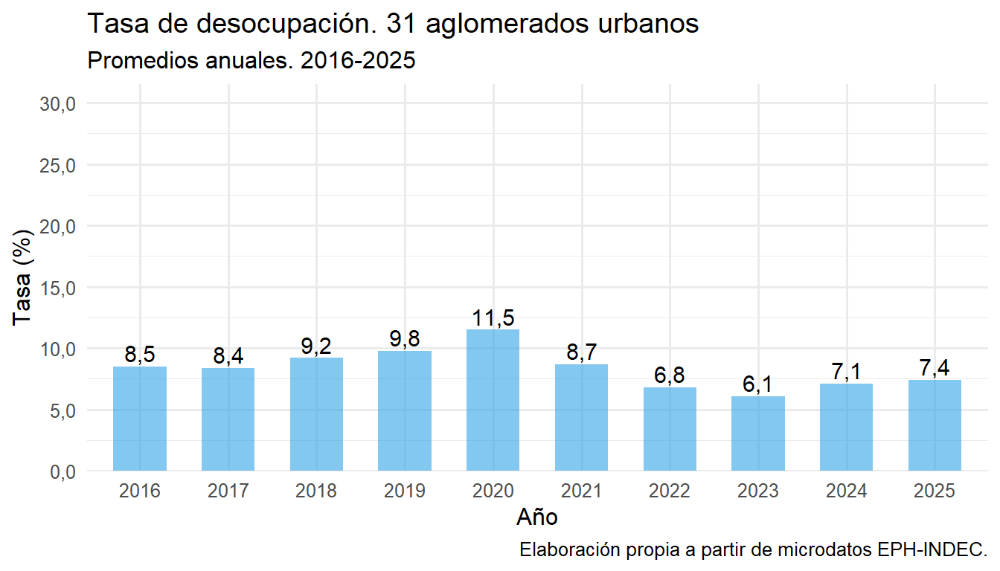
La tasa de actividad de Gran Mendoza registró una tendencia ascendente desde 2018. En 2019 superó el promedio correspondiente a los 31 aglomerados urbanos relevados por la EPH y, desde entonces, se mantuvo por encima de ese nivel de referencia.
El incremento más pronunciado de la participación económica se produjo durante la etapa de recuperación posterior a la pandemia. Aunque el indicador descendió levemente en 2023 y 2024, volvió a crecer en 2025 y alcanzó el 49,4%. Este resultado muestra que casi la mitad de la población del aglomerado se encontraba ocupada o buscaba activamente una ocupación. Este comportamiento podría estar asociado con una mayor necesidad de los hogares de incorporar integrantes al mercado de trabajo o de reforzar sus fuentes de ingresos.
La tasa de empleo exhibió una evolución semejante a la de actividad durante gran parte del período y también alcanzó sus valores máximos durante la postpandemia. Sin embargo, a partir de 2023 comenzó a disminuir y el retroceso se intensificó en 2025. La combinación de una mayor participación económica y una menor proporción de personas ocupadas evidencia que el mercado de trabajo local no logró absorber el crecimiento de la oferta laboral.
En este contexto, la tasa de desocupación aumentó considerablemente durante 2025. En términos absolutos, este crecimiento representó aproximadamente 7.700 personas desocupadas adicionales en el promedio anual, por lo que el total alcanzó alrededor de 34.500 personas en el principal aglomerado urbano de la provincia. Aunque el indicador continuó ubicándose por debajo del promedio de los 31 aglomerados urbanos, su aumento entre 2024 y 2025 fue más significativo.
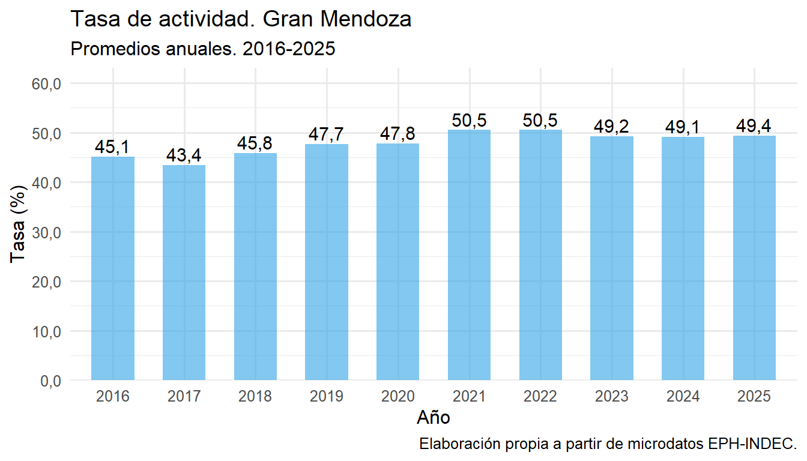
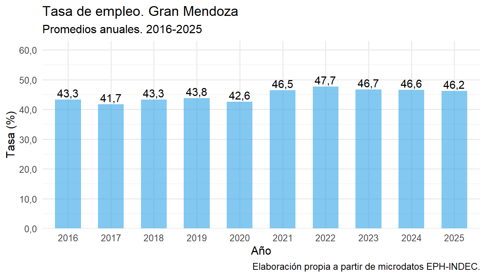
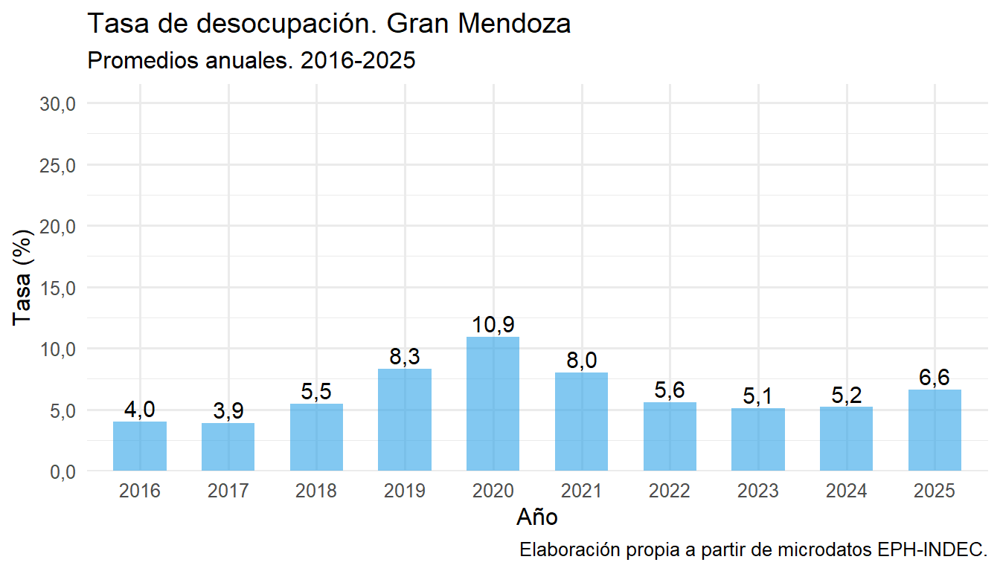
Presión sobre el mercado de trabajo: subocupación y ocupación demandante (2016-2025)
En el conjunto de los aglomerados urbanos, durante 2025, las tasas de subocupación demandante y de ocupación demandante disminuyeron levemente respecto del año anterior, aunque permanecieron por encima de los valores registrados en 2023.
Estos indicadores representan, dentro de la población económicamente activa, la proporción de personas ocupadas que trabajan involuntariamente menos de 35 horas semanales y desean ampliar su jornada laboral, así como la del conjunto de ocupados que buscan activamente otro empleo. Esta búsqueda puede asociarse con la insuficiencia de los ingresos de la ocupación actual, la cantidad de horas trabajadas o las condiciones de inserción laboral (González y Bonofiglio, 2025).
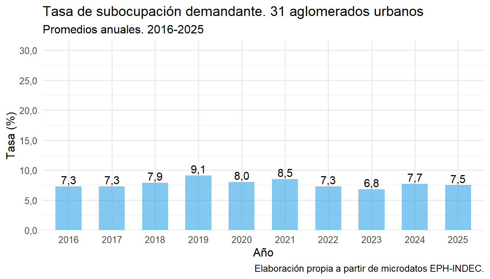
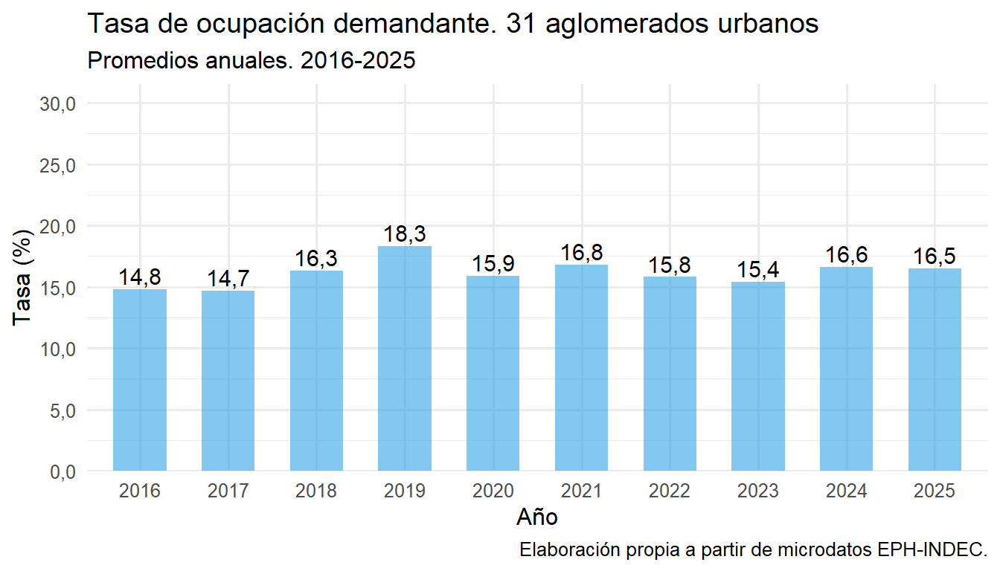
Las tasas de subocupación demandante y de ocupación demandante registraron en Gran Mendoza un marcado incremento a partir de 2018 y se mantuvieron por encima del promedio de los 31 aglomerados urbanos. Esta trayectoria ascendente se interrumpió transitoriamente en 2020, en el contexto de la pandemia y de las restricciones a la circulación, que limitaron las posibilidades de buscar activamente otro empleo. Luego de alcanzar en 2022 los valores más elevados de la serie, ambos indicadores descendieron durante 2023 y 2024, aunque continuaron superando la media nacional.
En 2025, ambas tasas volvieron a aumentar, especialmente la tasa de ocupación demandante. Este comportamiento sugiere que una parte creciente de la presión laboral no proviene solamente de personas con jornadas inferiores a 35 horas semanales, sino también de ocupados que, aun trabajando una cantidad mayor de horas, buscan activamente otro empleo. Esta búsqueda puede vincularse con la necesidad de complementar los ingresos mediante otra ocupación o de reemplazar el empleo actual por otro que ofrezca mejores remuneraciones y/o condiciones laborales más favorables.
En términos absolutos, la ocupación demandante aumentó en aproximadamente 13.000 ocupados respecto de 2024, por lo que el total de personas que buscaban activamente otro empleo superó las 107.000 en 2025.
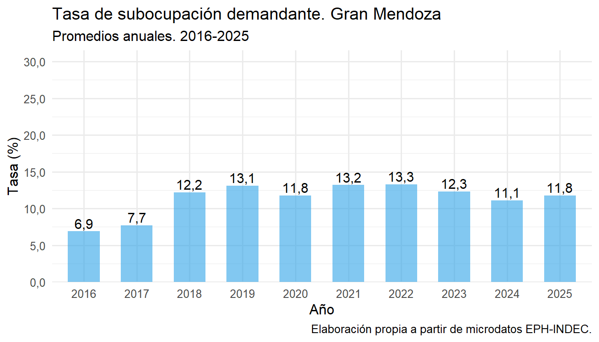
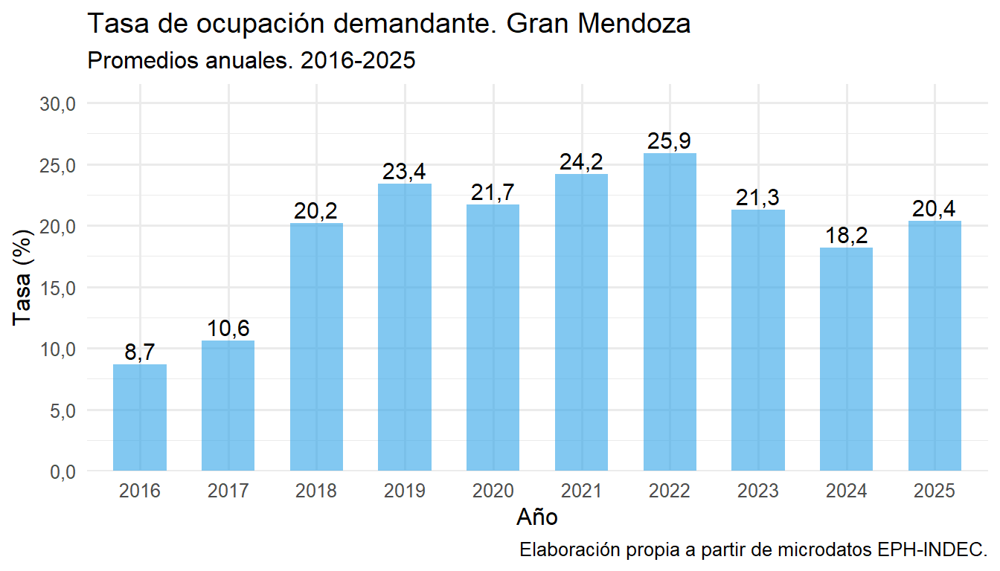
Aproximación a las condiciones laborales
Tasas de asalarización y de no registro (2016-2025)
En 2025, la tasa de asalarización profundizó su trayectoria descendente y alcanzó el valor más bajo de la serie analizada. Esta evolución expresa una reducción del peso relativo de las personas asalariadas dentro de la población ocupada y, como consecuencia, una mayor participación de las inserciones no asalariadas.
Por su parte, la tasa de no registro aumentó levemente en este último año e igualó el valor máximo registrado en 2022, lo que es indicativo de un deterioro en las condiciones laborales de quienes trabajan en relación de dependencia.
De esta manera, se observa una pérdida del peso del trabajo asalariado dentro de la estructura ocupacional y, simultáneamente, un aumento del no registro entre quienes continúan en una relación asalariada.
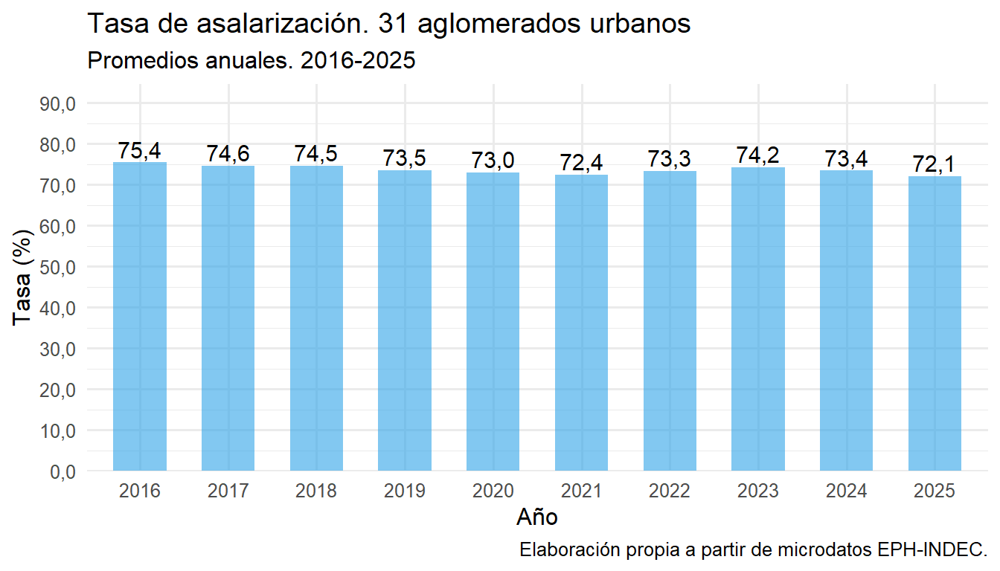
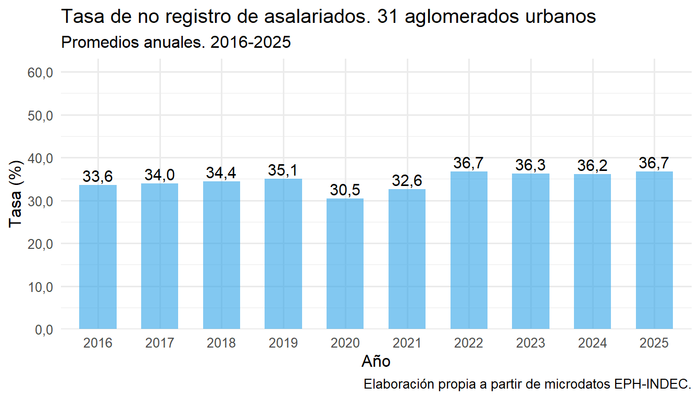
Desde 2016, la tasa de asalarización de Gran Mendoza mostró una tendencia descendente, aunque registró recuperaciones transitorias en 2018 y 2023. Durante 2024 y 2025 volvió a disminuir y alcanzó, en el último año, el valor más bajo de la serie. Esta evolución indica una reducción del peso relativo del empleo en relación de dependencia dentro de la población ocupada y, en contrapartida, un aumento de la participación de las inserciones no asalariadas. Durante el período analizado, esta tasa de Gran Mendoza se ubicó en niveles inferiores al promedio de los 31 aglomerados urbanos.
Por su parte, la tasa de no registro de las personas asalariadas presentó una tendencia ascendente, aunque no de manera continua. Luego del descenso registrado en 2020, en un contexto de destrucción de puestos de trabajo no registrados durante la pandemia, el indicador aumentó marcadamente en 2021. Si bien se redujo levemente entre 2022 y 2024, se mantuvo por encima de los valores prepandemia. En 2025 creció significativamente y alcanzó el valor más elevado de la serie, muy por encima del registrado en 2016. Además, durante todo el período analizado, la incidencia del no registro en los asalariados del Gran Mendoza fue considerablemente superior al promedio de los 31 aglomerados urbanos.
En conjunto, ambos indicadores muestran una disminución de la presencia del empleo asalariado entre la población ocupada y, dentro de este grupo, una mayor incidencia de trabajadores sin descuento jubilatorio. Estos resultados reflejan un deterioro de las condiciones laborales en Gran Mendoza más profundo que lo observado a nivel nacional.
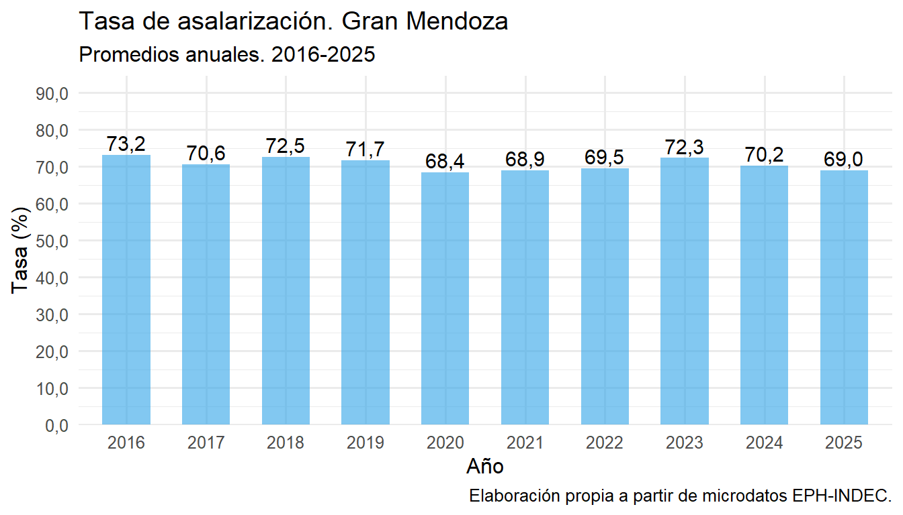
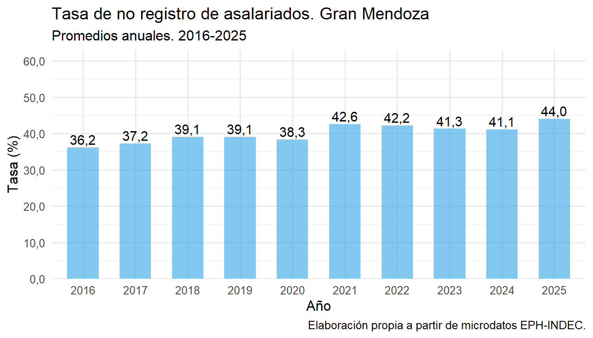
Nueva medición de la informalidad laboral (4T 2024-4T 2025)
A partir de la publicación de la base de microdatos de la Encuesta Permanente de Hogares (EPH) correspondiente al cuarto trimestre de 2024, el INDEC comenzó a difundir nuevas variables destinadas a medir la informalidad laboral de las unidades económicas, las personas ocupadas independientes y las personas asalariadas. No obstante, el cuestionario que incorporó estas variables había comenzado a aplicarse un año antes, en el cuarto trimestre de 2023. Hasta la fecha, las bases de microdatos correspondientes a ese período no se encuentran disponibles con la nueva información.
Si bien la literatura especializada había desarrollado diferentes aproximaciones para el estudio de la informalidad y la precariedad laboral, desde perspectivas institucionalistas, productivistas y otros enfoques teóricos (Bertranou, 2025), la EPH no permitía medir de manera directa la informalidad del trabajo independiente. Antes de la incorporación de estas variables, la medición oficial se concentraba principalmente en la informalidad asalariada mediante la tasa de no registro, construida a partir de la ausencia de aportes jubilatorios realizados por el empleador. La actualización del cuestionario permitió ampliar esta medición al conjunto de la población ocupada.
Esta nueva propuesta adopta una definición de la informalidad laboral entendida como el “conjunto de trabajadores y/o unidades productivas que desarrollan sus actividades al margen de las normas que las regulan”. En un segundo nivel, busca relevar “el cumplimiento de las normas tributarias y laborales en relación con el puesto de trabajo principal”. Este diseño se inscribe en una perspectiva “legalista” de la informalidad laboral (INDEC, 2025).
La metodología contempla dos dimensiones de análisis. Por un lado, examina la formalidad o informalidad de las unidades económicas, lo que permite caracterizar el trabajo independiente y las actividades desarrolladas en empresas y otras unidades productivas. Para ello, se construyó la variable “sector”, integrada por las categorías “formal”, “informal” y “hogares”. Por otro lado, analiza la formalidad de los puestos de trabajo mediante la variable “empleo”, que distingue entre las categorías “formal” e “informal”.6
De este modo, la metodología diferencia el “sector informal”, asociado a la ausencia de formalización legal de la actividad económica desarrollada por una unidad productiva, del “empleo informal”, referido a la falta de formalización del puesto de trabajo o de la relación laboral.7
Dado que la información no se encuentra disponible para todos los trimestres de 2024, no es posible realizar una comparación entre indicadores anuales de 2024 y 2025. Por este motivo, se presentan los datos correspondientes a los cuartos trimestres de ambos años.
Entre el cuarto trimestre de 2024 y el mismo período de 2025, la tasa de empleo informal aumentó en el conjunto de los aglomerados. Esto evidencia un agravamiento de la incidencia de la informalidad laboral entre la población ocupada.
| Tasa (%) | 4T 2024 | 4T 2025 |
|---|---|---|
| Empleo informal | 42,0 | 43,0 |
La tasa de empleo informal según sector de la unidad económica muestra que este tipo de empleo no se circunscribe exclusivamente al sector informal. Si bien en el sector formal predomina ampliamente el empleo regulado, en el cuarto trimestre de 2025 aumentó la proporción de personas ocupadas en condiciones de informalidad.
Como corresponde a su definición y construcción metodológica, el empleo de las personas ocupadas en el sector informal fue clasificado como informal. Por su parte, el sector hogares también presenta una elevada incidencia de la informalidad laboral: cerca de ocho de cada diez personas ocupadas en este sector tienen un empleo informal. Entre el cuarto trimestre de 2024 y el mismo período de 2025, esta población también registró un ligero incremento.
En conjunto, las variaciones interanuales fueron reducidas, pero muestran una leve expansión de la informalidad tanto dentro del sector formal como del sector hogares. Esto indica que el aumento del empleo informal no se explica únicamente por el peso de las unidades económicas informales, sino también por la persistencia de relaciones laborales no formalizadas en sectores clasificados como formales y en los hogares.
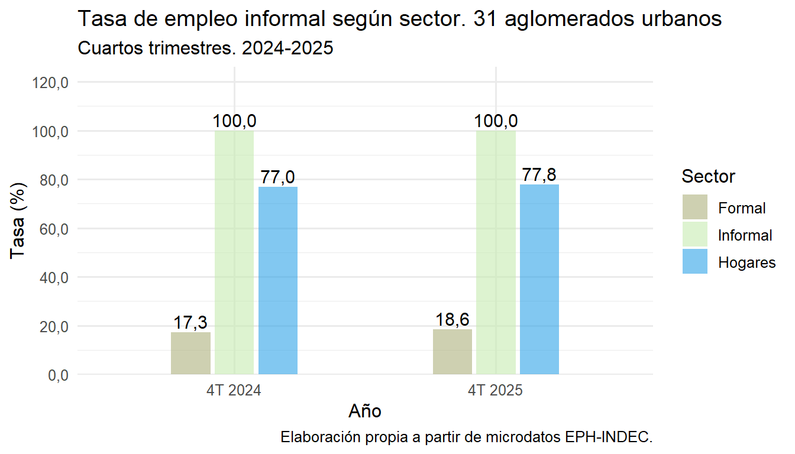
La tasa de empleo informal de Gran Mendoza no solo fue superior al promedio de los 31 aglomerados urbanos, sino que además registró un incremento interanual más pronunciado entre el cuarto trimestre de 2024 y el mismo período de 2025, afectando a casi 5 de cada 10 ocupados.
| Tasa (%) | 4T 2024 | 4T 2025 |
|---|---|---|
| Empleo informal | 46,9 | 48,5 |
La informalidad laboral según sector de la unidad económica registró, en este aglomerado, una incidencia mayor a la observada en el total urbano, tanto en el sector formal como en el sector hogares. En cuanto al sector informal, la tasa alcanzó el 100% en ambos períodos, de acuerdo con la definición metodológica del indicador. Esto se debe a que las personas ocupadas en unidades económicas clasificadas como informales son consideradas, por definición, trabajadoras con empleo informal.
Entre los cuartos trimestres de 2024 y 2025, la informalidad creció levemente dentro del sector formal, mientras que en el sector hogares el aumento fue algo más marcado. Esto confirma un mayor deterioro de las condiciones laborales.
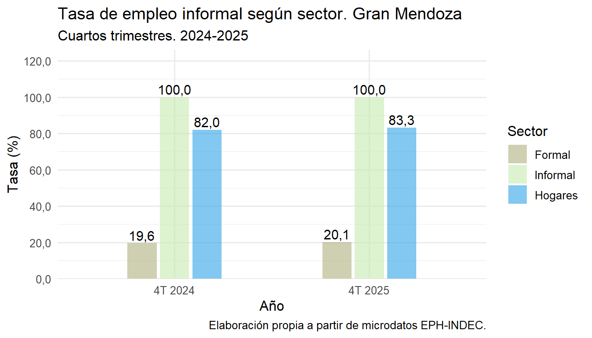
Desigualdades laborales según sexo (2024-2025)
En esta sección se presentan los indicadores del mercado de trabajo abordados previamente desagregados por sexo, como una aproximación al análisis de las desigualdades de género en el ámbito laboral. A diferencia de las tasas generales, estos indicadores se calculan para la población de 14 años y más.
En 2025, la tasa de actividad de las mujeres registró un leve descenso respecto de 2024, año en el que había alcanzado su valor más alto desde 2016 (Pol et al., 2025). La participación laboral de los varones también disminuyó en una magnitud similar, por lo que la brecha entre ambos grupos se mantuvo prácticamente sin cambios.8
No obstante, a pesar de que en los últimos años se produjo un incremento sostenido de la participación laboral femenina (Ledda y Paz, 2024), las diferencias con respecto a los varones continuaron siendo significativas. Estas brechas remiten a desigualdades estructurales que condicionan la inserción de las mujeres en el mercado de trabajo, entre ellas, la distribución desigual de las tareas domésticas y de cuidados no remuneradas (Ecofeminita/OXFAM, 2022; Faur y Jelin, 2013).
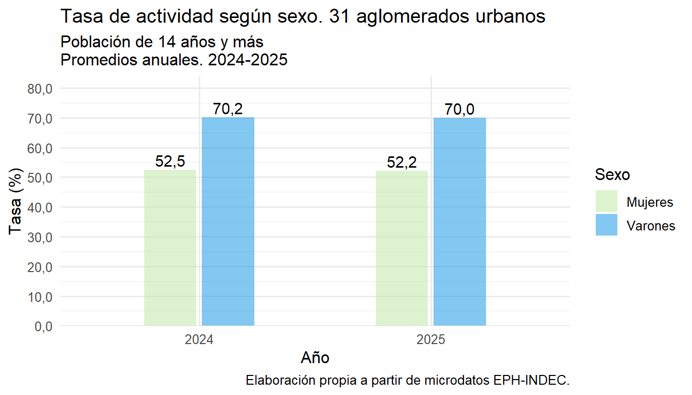
La tasa de empleo también disminuyó levemente en ambos sexos durante 2025, con un retroceso algo superior entre las mujeres. La tasa de desocupación registró un incremento moderado en los dos grupos, nuevamente más pronunciado en las mujeres. En conjunto, al tratarse de variaciones interanuales de escasa magnitud, no se modificaron sustantivamente las brechas observadas entre sexos, aunque la tendencia indica una ampliación de las diferencias entre ambos grupos. En este marco, las mujeres siguieron enfrentando una situación laboral más desfavorable, caracterizada por una menor tasa de empleo y una mayor incidencia de la desocupación.
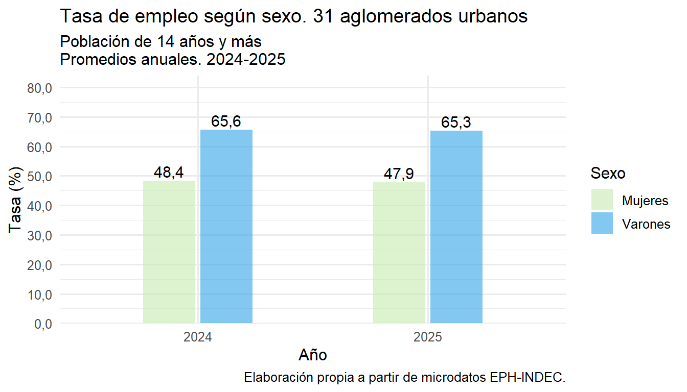
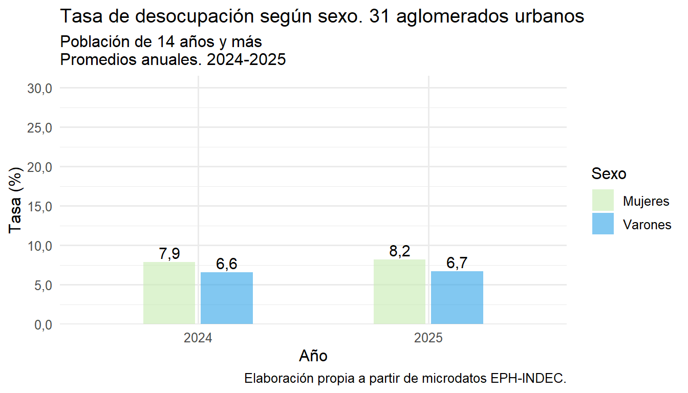
En lo que respecta a la tasa de subocupación demandante, hubo una tenue disminución en ambos sexos que se corresponde con lo observado a nivel general, aunque la brecha entre mujeres y varones se mantuvo. En el caso de la ocupación demandante, que además de considerar a las personas subocupadas que buscan trabajar más horas incluye a otros ocupados que demandan empleo, la tendencia fue distinta: la tasa se mantuvo en el caso de las mujeres y en los varones disminuyó ligeramente, lo que incrementó la brecha entre ambos sexos.
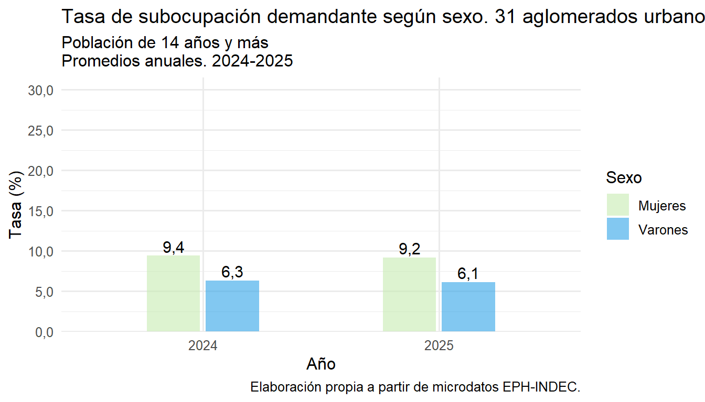
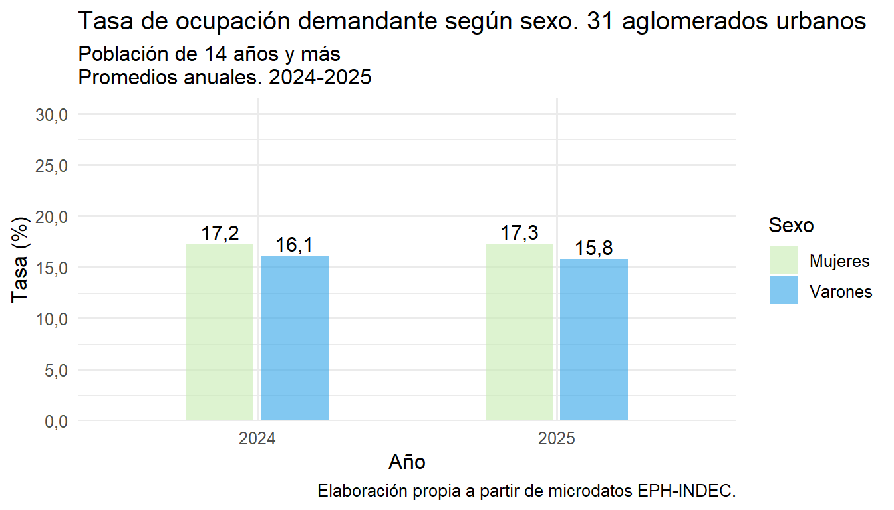
La tasa de asalarización disminuyó en ambos sexos durante 2025, con una caída más pronunciada entre las mujeres. Esta evolución indica un aumento del peso relativo de las inserciones no asalariadas entre las mujeres ocupadas.
Al mismo tiempo, la tasa de no registro aumentó, especialmente entre los varones, lo que redujo ligeramente la brecha de género. Sin embargo, este acercamiento no respondió a una mejora de la situación laboral de las mujeres, sino a un incremento más pronunciado del no registro entre los varones. Las mujeres continuaron presentando una mayor incidencia del empleo asalariado no registrado, una desigualdad de carácter estructural.
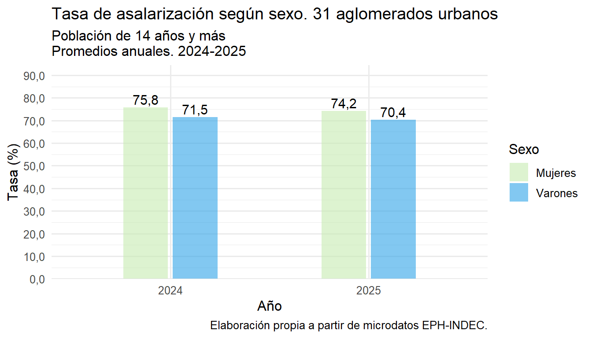
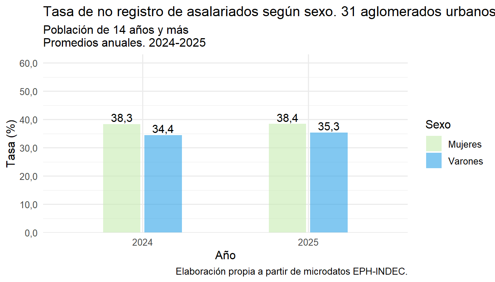
Entre el cuarto trimestre de 2024 y el mismo período de 2025, la tasa de empleo informal aumentó en ambos sexos, con un crecimiento más marcado entre las mujeres, lo que amplió levemente la brecha de género. Este nuevo indicador, que comprende a la totalidad de la población ocupada y no lo solo a las personas asalariadas, confirma que las mujeres enfrentan mayores desventajas en el acceso a empleos regulados.
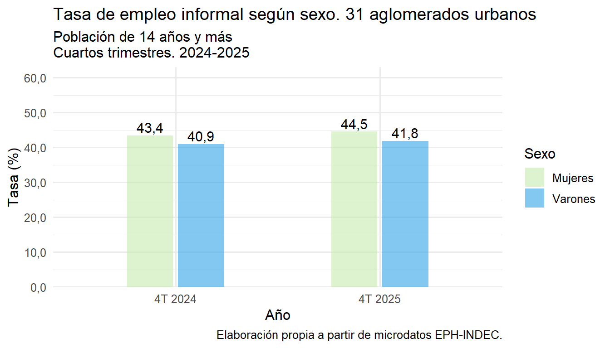
La tasa de actividad de las mujeres en Gran Mendoza fue, en los últimos años, similar a la registrada en el conjunto de los aglomerados urbanos. En cambio, la participación económica de los varones fue más elevada, por lo que la brecha entre ambos sexos en este indicador fue mayor en Gran Mendoza. Durante 2025, la tasa de actividad de las mujeres aumentó levemente, mientras que la de los varones disminuyó también de forma tenue. Como resultado, la diferencia entre mujeres y varones se redujo ligeramente.
La tasa de empleo también se ubicó por encima de la observada en el conjunto de los aglomerados urbanos tanto para mujeres como para varones. Sin embargo, durante 2025 el empleo disminuyó para ambos grupos, aunque el descenso fue más pronunciado entre las mujeres. En consecuencia, la tasa de desocupación femenina, históricamente superior a la masculina, registró un incremento significativo. En términos absolutos, ello representó alrededor de 6.000 mujeres desocupadas adicionales respecto de 2024, lo que elevó el total a más de 18.000 mujeres desempleadas en 2025. La tasa de desocupación de los varones también aumentó, aunque con menor intensidad. Como resultado, la brecha de género en la desocupación se incrementó.
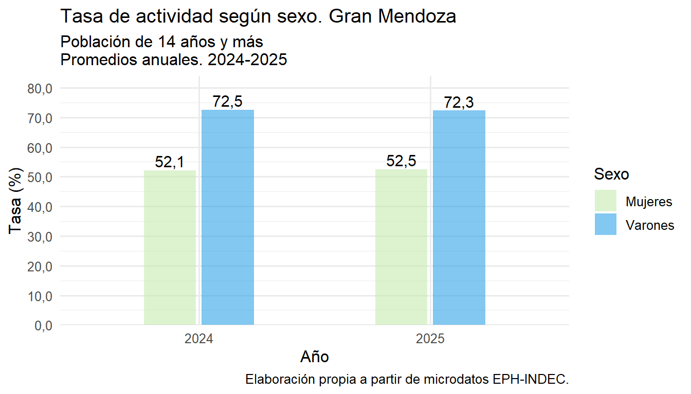
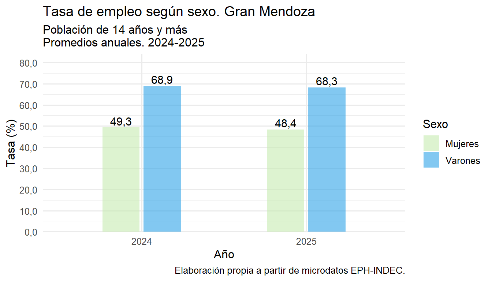
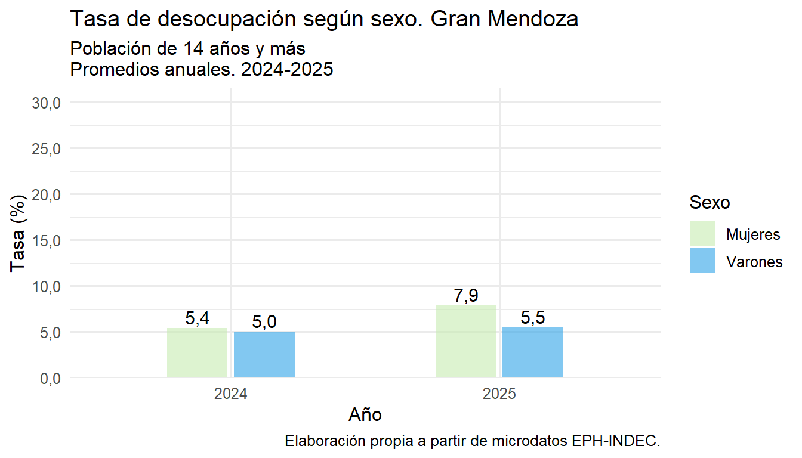
La tasa de subocupación demandante de mujeres y varones en Gran Mendoza fue superior a la observada en el conjunto de los 31 aglomerados urbanos. Asimismo, la brecha entre ambos sexos fue más amplia. Sin embargo, durante 2025 esta diferencia se redujo, como resultado de una leve disminución de la subocupación demandante entre las mujeres y de un aumento entre los varones. Aun así, las mujeres continuaron presentando una mayor incidencia, lo que expone inserciones laborales con menor carga horaria, que suelen presentar menores remuneraciones y peores condiciones de trabajo (Ledda y Paz, 2024).
En cuanto a la ocupación demandante, Gran Mendoza también registró tasas superiores a las del conjunto de los aglomerados urbanos, así como una brecha de género más pronunciada. En 2025, la demanda de otro empleo aumentó tanto entre mujeres como entre varones, aunque el incremento fue mayor en estos últimos. Como resultado, la diferencia entre ambos grupos se achicó, sin que ello modificara el hecho de que las mujeres continuaron presentando niveles más elevados de ocupación demandante.
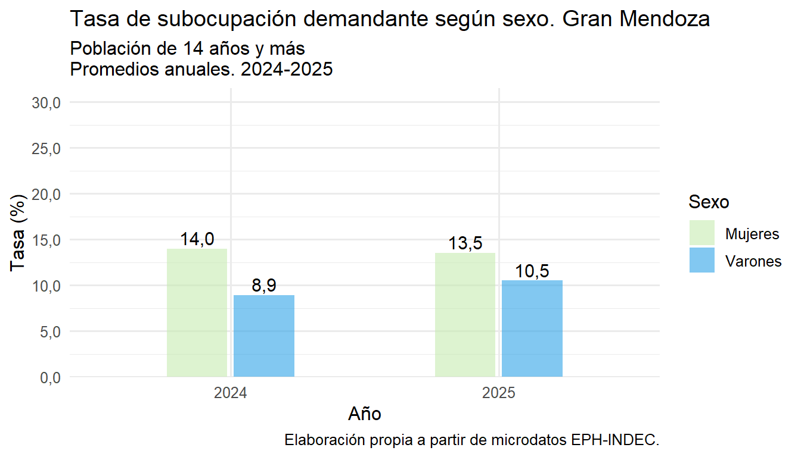
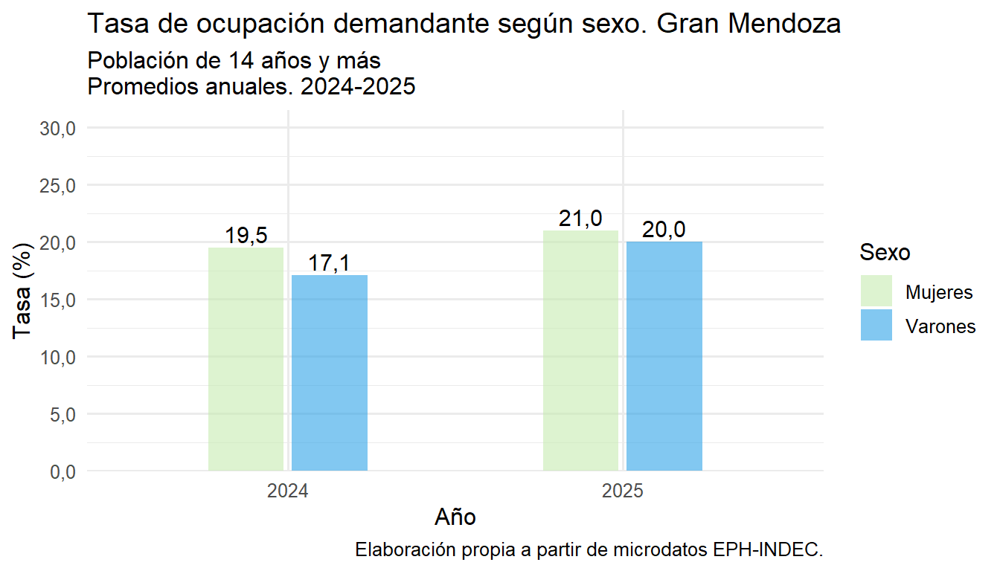
Como se observó a nivel agregado, la tasa de asalarización en Gran Mendoza fue inferior a la registrada en el conjunto de los 31 aglomerados urbanos, tanto entre mujeres como entre varones. Durante 2025, el descenso fue más pronunciado entre los varones, lo que refleja un aumento relativo del peso de las inserciones laborales no asalariadas dentro de este grupo.
La tasa de no registro de las personas asalariadas fue considerablemente más elevada entre las mujeres ocupadas de Gran Mendoza que entre las mujeres del conjunto de los 31 aglomerados urbanos. Asimismo, la brecha respecto de los varones fue más amplia. En 2025, el no registro aumentó en ambos grupos, aunque con mayor intensidad entre los varones, lo que redujo la diferencia entre sexos. A pesar de ello, las mujeres continuaron presentando una incidencia significativamente mayor de empleo asalariado no registrado, lo que evidencia un acceso más limitado a empleos con cobertura de la seguridad social.
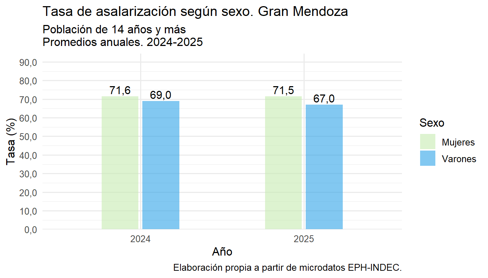
La tasa de empleo informal, calculada a partir de las nuevas variables incorporadas por el INDEC a la EPH y que considera al conjunto de la población ocupada muestra una situación aún más desfavorable. En el cuarto trimestre de 2024, más de la mitad de las mujeres ocupadas en Gran Mendoza tenía un empleo informal, proporción que aumentó durante 2025. Entre los varones, la informalidad también se incrementó e incluso lo hizo en una magnitud algo mayor, lo que redujo la brecha entre ambos grupos. No obstante, esta disminución de la diferencia obedeció a un deterioro relativamente más intenso de la situación laboral de los varones y no a una mejora de las condiciones de empleo de las mujeres.
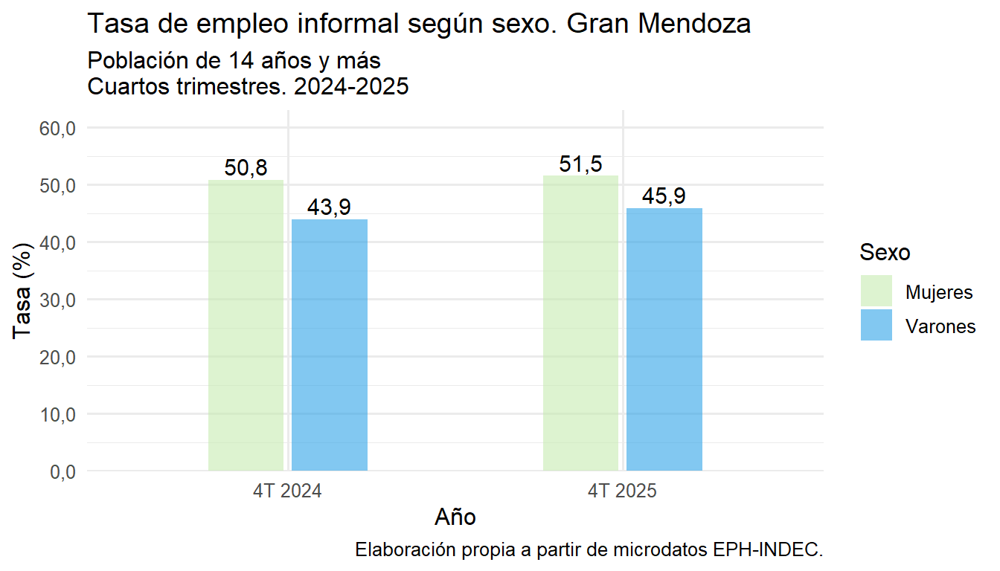
Desigualdades laborales según grupos de edad (2024-2025)
En este apartado se presentan los indicadores laborales según grupos de edad: jóvenes de 14 a 29 años y personas adultas de 30 a 64 años.9
El análisis por grupos de edad muestra que, durante 2025, la situación laboral de la población joven, de 14 a 29 años, presentó un deterioro más marcado que la de las personas adultas de 30 a 64 años. Entre los jóvenes, las tasas de actividad y empleo disminuyeron en mayor medida, mientras que la desocupación registró un incremento algo superior. Estos comportamientos sugieren que una parte de esta población dejó de buscar activamente una ocupación y pasó a la inactividad, en un contexto de mayores dificultades para acceder al empleo. En este marco, la tasa de desocupación juvenil continuó siendo especialmente elevada y triplicó la registrada entre la población adulta.
| Grupo de edad | 2024 | 2025 | 2024 | 2025 | 2024 | 2025 |
|---|---|---|---|---|---|---|
| 14 a 29 años | 47,6 | 47,0 | 40,6 | 39,9 | 14,6 | 15,0 |
| 30 a 64 años | 81,4 | 81,1 | 77,5 | 77,0 | 4,8 | 5,0 |
Los indicadores de subocupación y ocupación demandante muestran una presión laboral más intensa entre las personas jóvenes. Durante 2025, y en línea con lo observado a nivel agregado, ambas tasas disminuyeron levemente tanto entre los jóvenes como entre los adultos.
| Grupo de edad | 2024 | 2025 | 2024 | 2025 |
|---|---|---|---|---|
| 14 a 29 años | 9,1 | 8,9 | 19,7 | 19,4 |
| 30 a 64 años | 7,4 | 7,2 | 16,2 | 16,1 |
La tasa de asalarización descendió en ambos grupos de edad durante 2025. No obstante, las personas de 14 a 29 años continuaron presentando una tasa más elevada que las de 30 a 64 años. Este resultado indica que la inserción laboral de la población joven ocurre con mayor frecuencia mediante empleos en relación de dependencia, aunque la disminución del indicador muestra un aumento relativo de las inserciones no asalariadas.
En cuanto a la tasa de no registro, más de la mitad de los trabajadores asalariados de 14 a 29 años no percibía descuentos jubilatorios. Entre las personas de 30 a 64 años, esta proporción fue considerablemente menor, aunque aumentó durante 2025.
Por consiguiente, se observa que las personas jóvenes presentan mayores niveles de desocupación, búsqueda de otra ocupación y empleo asalariado no registrado. La combinación de una elevada asalarización con una alta incidencia del no registro sugiere que su incorporación al empleo asalariado ocurre, en gran medida, bajo condiciones laborales más precarias.
| Grupo de edad | 2024 | 2025 | 2024 | 2025 |
|---|---|---|---|---|
| 14 a 29 años | 81,3 | 80,5 | 54,1 | 54,1 |
| 30 a 64 años | 72,9 | 71,5 | 29,8 | 30,4 |
Entre los cuartos trimestres de 2024 y 2025, la tasa de empleo informal disminuyó moderadamente en las personas de 14 a 29 años, mientras que aumentó en los adultos. No obstante, su incidencia continuó siendo especialmente elevada entre la población joven: en 2025, casi seis de cada diez personas ocupadas de 14 a 29 años tenían un empleo informal. Por ello, el descenso observado en los jóvenes no debe interpretarse como una mejora de sus condiciones laborales. En el marco de los comportamientos de las tasas básicas, esta evolución se asocia con una contracción de las inserciones informales y con mayores dificultades del mercado de trabajo para absorber la oferta laboral juvenil, antes que con una expansión del acceso a empleos formales.
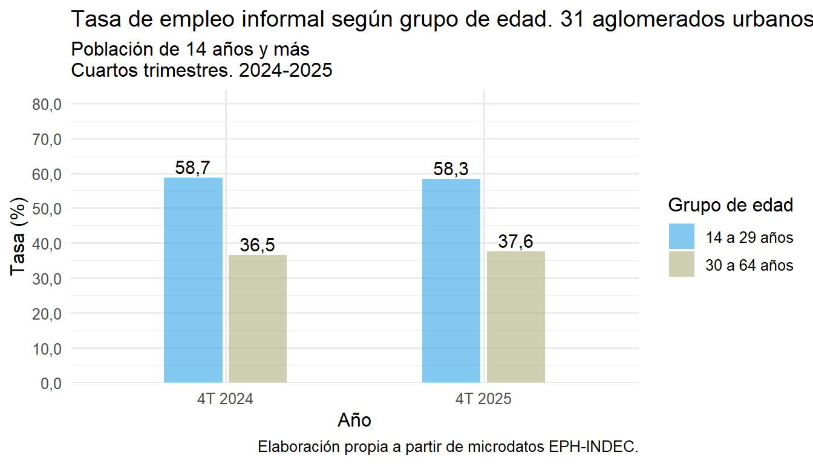
En Gran Mendoza, durante 2025, la tasa de actividad de las personas de 14 a 29 años aumentó, mientras que la correspondiente al grupo de 30 a 64 años registró una tenue disminución. Este comportamiento contrastó con lo observado en el conjunto de los 31 aglomerados urbanos, donde la participación económica juvenil se redujo. Sin embargo, el aumento de la actividad entre los jóvenes mendocinos no estuvo acompañado por un incremento equivalente en el acceso al empleo.
La tasa de empleo descendió en ambos grupos, aunque el retroceso tuvo consecuencias más desfavorables entre las personas jóvenes. Como resultado de la combinación entre una mayor participación económica y una menor proporción de ocupados, el aumento de la desocupación juvenil fue considerablemente pronunciado entre 2024 y 2025: en términos absolutos, se sumaron alrededor de 4.000 jóvenes desocupados, lo que elevó el total a más de 14.000 personas entre 14 a 29 años desempleadas en 2025. Si bien el desempleo también aumentó en las personas de 30 a 64 años, lo hizo en menor medida.
Aunque la desocupación juvenil de Gran Mendoza se mantuvo por debajo de la observada para el mismo grupo en los 31 aglomerados urbanos, su deterioro interanual fue mucho más intenso. Estos resultados evidencian mayores dificultades del mercado de trabajo local para absorber la creciente participación laboral de la población joven.
| Grupo de edad | 2024 | 2025 | 2024 | 2025 | 2024 | 2025 |
|---|---|---|---|---|---|---|
| 14 a 29 años | 48,8 | 49,7 | 44,6 | 43,8 | 8,7 | 11,9 |
| 30 a 64 años | 83,7 | 83,3 | 80,2 | 79,2 | 4,2 | 5,0 |
Los indicadores de presión sobre el mercado de trabajo también muestran una situación particularmente desfavorable para la población joven de Gran Mendoza. Tanto la subocupación demandante como la ocupación demandante se ubicaron por encima de los valores registrados para este mismo grupo en el conjunto de los 31 aglomerados urbanos.
Entre 2024 y 2025, la subocupación demandante aumentó entre las personas de 14 a 29 años, mientras que permaneció estable entre las de 30 a 64 años. Esta evolución indica que una proporción creciente de jóvenes trabajaba involuntariamente menos de 35 horas semanales y buscaba ampliar su jornada laboral. Por su parte, la tasa de ocupación demandante aumentó en ambos grupos, aunque con mayor intensidad entre la población joven. En suma, estos resultados muestran que la presión laboral no solo fue más elevada entre los jóvenes, sino que además se intensificó durante 2025.
| Grupo de edad | 2024 | 2025 | 2024 | 2025 |
|---|---|---|---|---|
| 14 a 29 años | 13,9 | 15,8 | 21,7 | 25,7 |
| 30 a 64 años | 10,7 | 10,7 | 17,7 | 19,3 |
Los niveles de la tasa de asalarización de las personas jóvenes fueron similares a los registrados en el conjunto de los 31 aglomerados urbanos. En 2025, este indicador disminuyó en ambos grupos de edad, aunque con mayor intensidad entre las personas de 30 a 64 años. Sin embargo, esta cercanía con el total nacional en los niveles de asalarización contrastó con diferencias más marcadas en las condiciones bajo las cuales se desarrollaba el empleo asalariado.
En particular, la tasa de no registro se ubicó en niveles considerablemente superiores en Gran Mendoza respecto del conjunto de los 31 aglomerados urbanos, especialmente entre las personas jóvenes. Entre 2024 y 2025, el indicador aumentó en ambos grupos de edad, pero lo hizo con mayor intensidad entre quienes tenían entre 14 y 29 años. De este modo, a fines de 2025, casi dos de cada tres jóvenes asalariados no percibían descuentos jubilatorios.
| Grupo de edad | 2024 | 2025 | 2024 | 2025 |
|---|---|---|---|---|
| 14 a 29 años | 80,9 | 80,0 | 61,3 | 63,8 |
| 30 a 64 años | 69,0 | 67,5 | 33,9 | 36,7 |
La tasa de empleo informal refuerza la gravedad de esta situación, ya que considera al conjunto de la población ocupada y no solo a quienes trabajan en relación de dependencia. Entre los cuartos trimestres de 2024 y 2025, la informalidad aumentó tanto entre jóvenes como entre adultos. No obstante, su incidencia continuó siendo considerablemente más alta entre las personas de 14 a 29 años y superior a la registrada para ese mismo grupo en el conjunto de los 31 aglomerados urbanos: en Gran Mendoza, casi siete de cada diez ocupados jóvenes tenían un empleo informal. En síntesis, estos indicadores muestran que la población joven enfrenta mayores dificultades a nivel local tanto para acceder al empleo como para hacerlo en condiciones de formalidad.
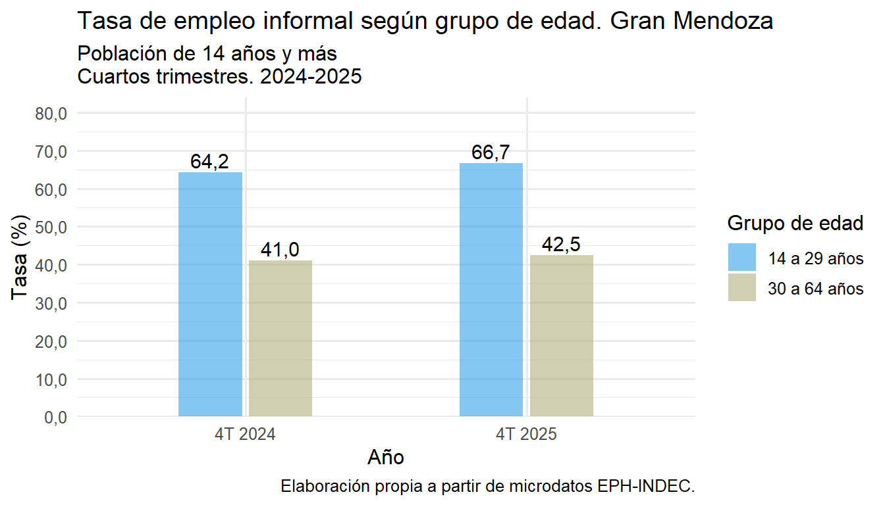
Tablero interactivo
Como complemento a este informe se presenta un tablero interactivo que permite consultar la evolución de los indicadores laborales durante 2016-2025, tanto en los 31 aglomerados urbanos como en Gran Mendoza. También, permite acceder a las series completas según sexo y grupos de edad. En el informe estos datos se analizan únicamente para 2024 y 2025.
Los nuevos indicadores de informalidad laboral no se incluyen en el tablero, ya que solo se encuentran disponibles desde el cuarto trimestre de 2024 y todavía no permiten construir una serie temporal para todo el período.
Referencias bibliográficas
Bertranou, F. (2025). Informalidad laboral: evolución conceptual, medición y enfoque para la transición hacia la formalización. Nota Técnica. Organización Internacional del Trabajo.
Ecofeminita/OXFAM. (2022). Los cuidados en Latinoamérica y El Caribe. Entre las crisis y las redes comunitarias. OXFAM.
Faur, E., y Jelin, E. (2013). Cuidado, género y bienestar. Una perspectiva de la desigualdad social. Voces en el Fénix, N.º 23.
González, M. L. (2025). Dinámica y transformaciones recientes del mercado laboral. Revista La causa laboral. Asociación de Abogadas y Abogados Laboralistas.
González, M. L., y Bonofiglio, N. (2025). Informe sobre situación del mercado de trabajo N.º 16. CIFRA–CTA.
Instituto Nacional de Estadística y Censos [INDEC] (2026a). Informe de avance del nivel de actividad. Cuarto trimestre de 2025.
Instituto Nacional de Estadística y Censos [INDEC] (2026b). Mercado de trabajo. Indicadores de informalidad laboral (EPH). Cuarto trimestre de 2024 a cuarto trimestre de 2025.
Instituto Nacional de Estadística y Censos [INDEC] (2025). Diseño conceptual y metodológico para la medición de la informalidad laboral con datos de la EPH. Metodología INDEC N° 43.
Instituto Nacional de Estadística y Censos [INDEC] (2022). Dosier estadístico en conmemoración del 111° Día Internacional de la Mujer.
Instituto Nacional de Estadística y Censos [INDEC] (2016). Consideraciones sobre la revisión, evaluación y recuperación de la Encuesta Permanente de Hogares (EPH). Anexo Informe de prensa. Mercado de trabajo: principales indicadores. Segundo trimestre de 2016.
Manzanelli, P. y Amoretti, L. (2026). Informe de coyuntura N° 49. Diciembre de 2025. CIFRA-CTA.
Manzanelli, P. y Amoretti, L. (2025). Informe de coyuntura N° 48. Diciembre de 2025. CIFRA-CTA.
Ledda, V. y Paz, B. (2024). Mujeres en el mercado de trabajo en Argentina y Mendoza. Recomendaciones de políticas públicas en clave de género. Área de Políticas Públicas. Instituto de Trabajo y Producción. UNCUYO.
Pol, M. A., Paz, B., Lozano, J. y Ledda, V. (2025). Observatorio laboral “Informe 2024”. Instituto de Trabajo y Producción. UNCUYO.
Robles, R., Giannecchini, A. y Ledda, V. (2026). Deterioro y resquebrajamiento de la estructura social del trabajo. Documento de trabajo N° 2026/1. Observatorio de la Deuda Social Argentina.
Cómo citar este trabajo
Ledda, Valentina (2026). El mercado de trabajo en Argentina y Mendoza durante 2025: indicadores elaborados a partir de la Encuesta Permanente de Hogares (EPH). Disponible en: https://informe-mercado-trabajo-2025.netlify.app/
Sobre la autora
Valentina Ledda es doctora en Ciencias Sociales, especialista en Métodos y técnicas de investigación social y licenciada en Sociología. Se dedica a la investigación social aplicada, el análisis de datos y la construcción de indicadores, especialmente en temas vinculados con el mercado de trabajo, la desigualdad y las condiciones de vida. Actualmente desarrolla este proyecto como investigadora independiente.
Acerca de este proyecto
La elaboración y actualización de este informe constituyen un trabajo independiente que no cuenta actualmente con financiamiento institucional. Si considerás valiosa la producción periódica y de acceso abierto de información sobre el mercado de trabajo en Argentina y Mendoza, podés contribuir a sostenerla mediante Cafecito.
Notas
El promedio del año 2016 se elaboró a partir de los datos del segundo, tercero y cuarto trimestre, ya que la base correspondiente al primero no fue publicada por INDEC en el marco de la emergencia estadística. Mas informacion en: https://www.indec.gob.ar/ftp/cuadros/sociedad/anexo_informe_eph_23_08_16.pdf↩︎
Esta decisión metodológica también permite reunir un mayor número de observaciones en el caso de Gran Mendoza, lo que contribuye a mejorar la solidez de las estimaciones.↩︎
Cabe señalar que las personas subocupadas demandantes forman parte del conjunto de ocupados demandantes de empleo, por lo que ambas categorías no son mutuamente excluyentes. De este modo, la tasa de ocupación demandante incluye tanto a quienes trabajan involuntariamente menos de 35 horas semanales y buscan ampliar su jornada laboral como a otras personas ocupadas que buscan activamente otro empleo.↩︎
A partir del segundo trimestre de 2016, el INDEC reanudó la publicación oficial de los resultados de la EPH, luego de la declaración de la emergencia estadística (INDEC, 2016). Por este motivo, la serie analizada comienza en este año.↩︎
El INDEC publicó indicadores de informalidad laboral para el conjunto de los 31 aglomerados urbanos desde el cuarto trimestre de 2023. Sin embargo, hasta la fecha, las variables necesarias para reproducir estos cálculos no se encuentran incorporadas en las bases de microdatos correspondientes al período comprendido entre el cuarto trimestre de 2023 y el tercer trimestre de 2024. En consecuencia, no es posible estimar estos indicadores mediante el procesamiento de los microdatos ni obtener resultados para Gran Mendoza anteriores al cuarto trimestre de 2024. Por este motivo, el análisis se restringe a la comparación entre los últimos trimestres de 2024 y 2025. Asimismo, como se trata de variables nuevas, no es posible construir series de más largo plazo. Por esta razón, se mantiene la tasa de no registro de las personas asalariadas, que permite aproximarse a la evolución de las condiciones laborales durante un período más extenso, aunque de forma restringida a los trabajadores en relación de dependencia.↩︎
En los trabajadores independientes las características del empleo están dadas por las características de la unidad económica que estos trabajadores poseen y operan, por lo que la variable “empleo” adquiere la misma clasificación que “sector” (INDEC, 2025)↩︎
El empleo informal comprende, entonces, a las personas ocupadas que se encuentran en alguna de estas categorías: 1) trabajadores cuenta propia o patrones en sus empresas del sector informal (unidades económicas que producen bienes o servicios particularmente para el mercado y no están reconocidas para tal fin), 2) asalariados con una relación laboral que no está sujeta a la legislación laboral, estén empleados por empresas del sector formal, del sector informal, o del sector hogares (trabajadores domésticos remunerados), 3) trabajadores familiares sin remuneración (INDEC, 2026b).↩︎
La brecha se calcula como el cociente entre los resultados del indicador para las mujeres y los varones (INDEC, 2022).↩︎
La población de 65 años y más no se incluye en el análisis porque su baja participación en el mercado de trabajo reduce considerablemente la cantidad de casos disponibles en la muestra. Como consecuencia, las tasas estimadas para este grupo presentan menor precisión.↩︎